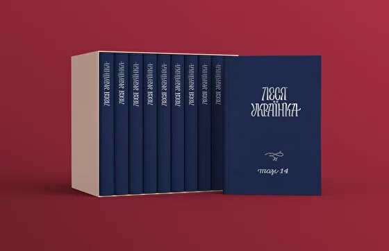
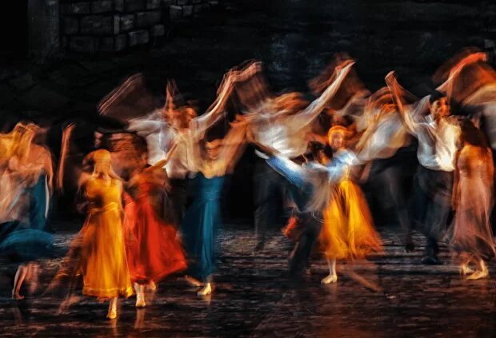
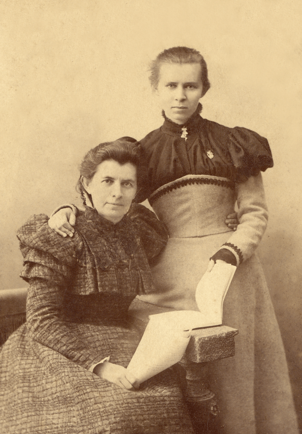
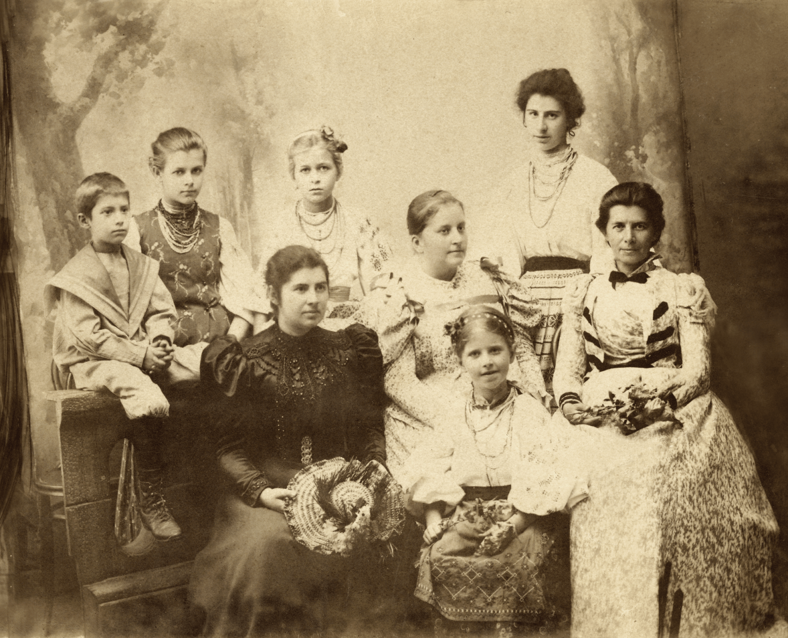
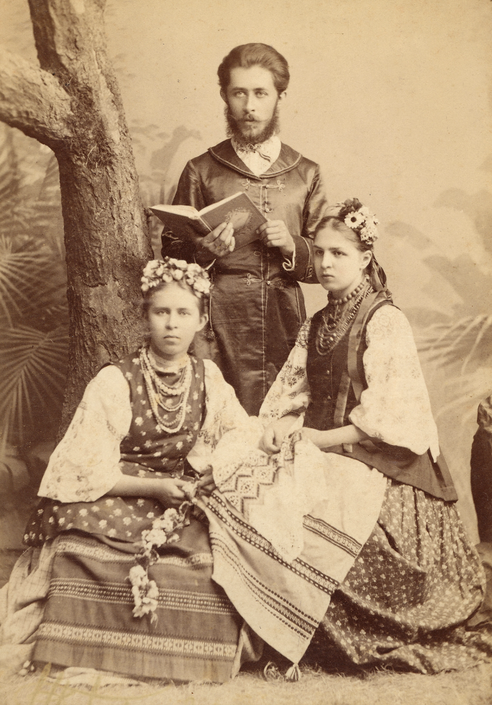

150 РIЧНИЦЯ ЛЕСI УКРАЇНКИ
"25 лютого 2021 року виповниться 150 років від дня народження Лесі Українки".
Співзасновниця літературного гуртка «Плеяда». В сучасній українській традиції входить до переліку найвідоміших жінок давньої та сучасної України.
"25 лютого 2021 року виповниться 150 років від дня народження Лесі Українки".
Леся Українка
"Дочка Прометея" (справжнє ім'я Лариса Петрівна Косач) — українська письменниця, перекладачка, фольклористка, культурна діячка, піонерка українського феміністичного руху.Співзасновниця літературного гуртка «Плеяда». В сучасній українській традиції входить до переліку найвідоміших жінок давньої та сучасної України.
Найкращі вірші Лесі Українки про Україну
"І все-таки до тебе думка лине"
Мій занапащений, нещасний краю,
Як я тебе згадаю,
У грудях серце з туги, з жалю гине.
Сі очі бачили скрізь лихо і насилля,
А тяжчого від твого не видали,
Вони б над ним ридали,
Та сором сліз, що ллються від безсилля.
О, сліз таких вже вилито чимало, –
Країна ціла може в них втопитись;
Доволі вже їм литись, –
Що сльози там, де навіть крові мало!
Як я тебе згадаю,
У грудях серце з туги, з жалю гине.
Сі очі бачили скрізь лихо і насилля,
А тяжчого від твого не видали,
Вони б над ним ридали,
Та сором сліз, що ллються від безсилля.
О, сліз таких вже вилито чимало, –
Країна ціла може в них втопитись;
Доволі вже їм литись, –
Що сльози там, де навіть крові мало!
"Do" (Гімн)
До тебе, Україно, наша бездольная мати,
Струна моя перша озветься.
І буде струна урочисто і тихо лунати,
І пісня від серця поллється.
По світі широкому буде та пісня літати,
А з нею надія кохана
Скрізь буде літати, по світі між людьми питати,
Де схована доля незнана?
І, може, зустрінеться пісня моя самотная
У світі з пташками-піснями,
То швидко полине тоді тая гучная зграя
Далеко шляхами-тернами.
Полине за синєє море, полине за гори,
Літатиме в чистому полю
Здійметься високо-високо в небесні простори
І, може, спітка тую долю.
І, може, тоді завітає та доля жадана
До нашої рідної хати,
До тебе, моя ти Україно мила, кохана,
Моя безталанная мати!
Струна моя перша озветься.
І буде струна урочисто і тихо лунати,
І пісня від серця поллється.
По світі широкому буде та пісня літати,
А з нею надія кохана
Скрізь буде літати, по світі між людьми питати,
Де схована доля незнана?
І, може, зустрінеться пісня моя самотная
У світі з пташками-піснями,
То швидко полине тоді тая гучная зграя
Далеко шляхами-тернами.
Полине за синєє море, полине за гори,
Літатиме в чистому полю
Здійметься високо-високо в небесні простори
І, може, спітка тую долю.
І, може, тоді завітає та доля жадана
До нашої рідної хати,
До тебе, моя ти Україно мила, кохана,
Моя безталанная мати!
"Скрізь плач, і стогін, і ридання"
Несмілі поклики, слабі,
На долю марні нарікання
І чола, схилені в журбі.
Над давнім лихом України
Жалкуєм-тужим в кожний час,
З плачем ждемо тії години,
Коли спадуть кайдани з нас.
Ті сльози розтроюдять рани,
Загоїтись їм не дадуть.
Заржавіють від сліз кайдани,
Самі ж ніколи не спадуть!
Нащо даремнії скорботи?
Назад нема нам воріття!
Берімось краще до роботи,
Змагаймось за нове життя!
На долю марні нарікання
І чола, схилені в журбі.
Над давнім лихом України
Жалкуєм-тужим в кожний час,
З плачем ждемо тії години,
Коли спадуть кайдани з нас.
Ті сльози розтроюдять рани,
Загоїтись їм не дадуть.
Заржавіють від сліз кайдани,
Самі ж ніколи не спадуть!
Нащо даремнії скорботи?
Назад нема нам воріття!
Берімось краще до роботи,
Змагаймось за нове життя!

Перше повне зібрання
творів Лесі Українки
у 14 томах
творів Лесі Українки
у 14 томах
До 150-річного ювілею Україна вперше
видасть повне нецензуроване зібрання
творів Лесі Українки
видасть повне нецензуроване зібрання
творів Лесі Українки

Опера
Опера "LE" режисера Влада Троїцького та формації NOVA OPERA
трансформує муміфікований образ Лесі Українки, показує її живою
людиною, борцем, освіченою просвітницею, яка закладала основи
української державності, вписавши українську культуру у світовий
контекст.
Це історія про те, чим жила Леся Українка, про що мріяла, і як її мрія
здійснилася. У виставі звучать українська, англійська та німецька мови.
Автори музики — Сергій Вілка та Андрій
Мерхель
трансформує муміфікований образ Лесі Українки, показує її живою
людиною, борцем, освіченою просвітницею, яка закладала основи
української державності, вписавши українську культуру у світовий
контекст.
Це історія про те, чим жила Леся Українка, про що мріяла, і як її мрія
здійснилася. У виставі звучать українська, англійська та німецька мови.
Автори музики — Сергій Вілка та Андрій
Мерхель



Леся Українка — єдине
широковідоме ім'я Лариси Косач
широковідоме ім'я Лариси Косач
Натомість справжнього імені письменниці більшість українців
не знає...
Але насправді в поетки і драматургині значно більше «імен»: «перша
українська феміністка», «мавка української поезії», «femme modern»,
«Блакитна троянда», «велика мрійниця», «Wonder Woman із дитячих
книг», «Лілея», «Вoule vagabonde», «Віла», «Саламандра», «Зея», «Косач-
Квітка»…
не знає...
Але насправді в поетки і драматургині значно більше «імен»: «перша
українська феміністка», «мавка української поезії», «femme modern»,
«Блакитна троянда», «велика мрійниця», «Wonder Woman із дитячих
книг», «Лілея», «Вoule vagabonde», «Віла», «Саламандра», «Зея», «Косач-
Квітка»…